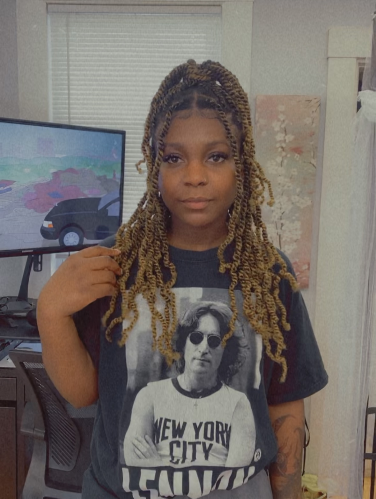

Natural Haircare
Natural haircare focuses on maintaining the health, moisture, and strength of naturally curly, coily, or kinky hair textures. Natural hair can be prone to dryness and breakage, so effective care routines involve moisturizing, gentle handling, and protective styles to promote hair growth and prevent damage. The goal is to keep the hair healthy while embracing its natural texture.
Here are some key features of natural haircare:
-
Versatility: Here are a variety of options I offer for natural styles
- Finger coils: Small sections of hair are wrapped around the finger to create a coil or curl.
- Bantu knots: The hair is sectioned, twisted, and wrapped into small, tight buns close to the scalp.
- Twists: (Please refer to my twists page)
- Scalp care: A healthy scalp is the foundation for healthy hair. It’s important to keep the scalp clean, moisturized, and stimulated to promote hair growth.
- Finding right products: Finding products that work for your hair type is important for maintaining its health and moisture.
- Detangling with care: Detangling curly or coily hair can be challenging. This process is done gently to prevent breakage.
- Protective hairstyle: Protective styles help reduce daily manipulation, protecting the ends of the hair from breakage and promoting hair growth. These styles shield the hair from environmental damage and reduce the need for frequent styling.
In summary, cornrows are a timeless and versatile hairstyle that involves braiding the hair closely to the scalp in neat rows or patterns. As a protective style, they help maintain natural hair health while offering a range of styling possibilities. Cornrows are also deeply rooted in cultural heritage, symbolizing identity, pride, and artistic expression.